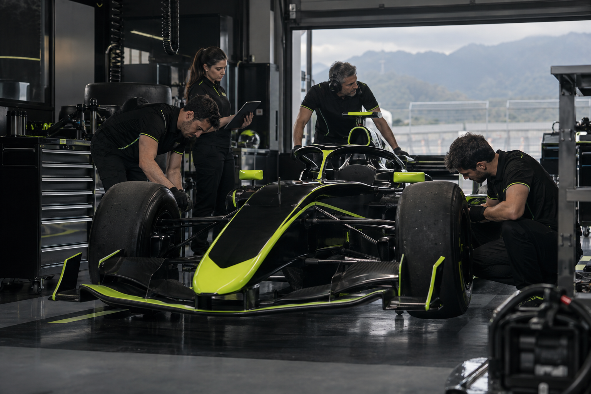
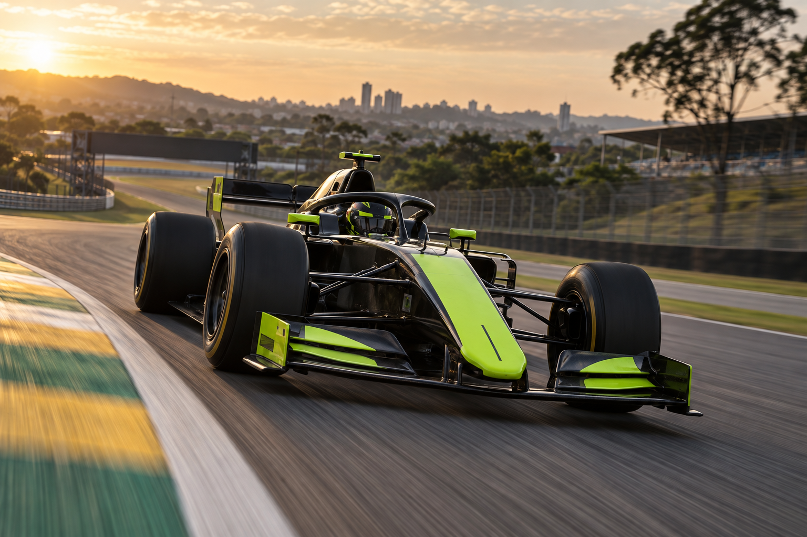

A PRIMEIRA FAÍSCA
Uma oficina, uma ideia e um time.
INÍCIO / A EQUIPE
Uma ideia brasileira. Um sonho coletivo. Uma nova maneira de encarar cada curva.

01 / NOSSA ORIGEM
A Vértice nasceu em 2024, em uma pequena oficina em São Paulo. Um grupo de engenheiros, mecânicos e pilotos decidiu transformar a paixão pelo automobilismo em um projeto com identidade própria.
Dos primeiros desenhos ao primeiro teste, cada passo foi construído em conjunto. Hoje, levamos para a pista o mesmo espírito do início: aprender rápido, cuidar de cada detalhe e nunca deixar de acreditar no próximo avanço.
Uma oficina, uma ideia e um time.
O primeiro protótipo ganha vida.
Testes, evolução e formação da dupla.
Prontos para a nossa primeira temporada.

02 / O QUE NOS MOVE
Cada detalhe é uma oportunidade de evoluir.
O novo exige vontade de tentar outra vez.
Ninguém cruza a linha de chegada sozinho.
Conheça quem leva esse sonho para dentro do cockpit.